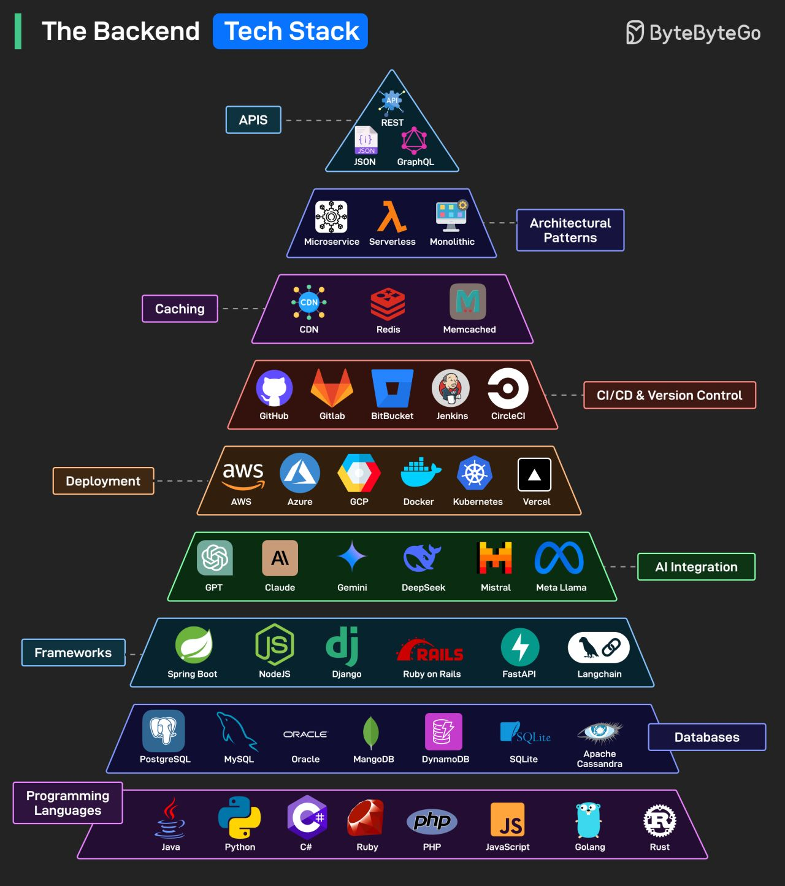

Tech Stacks¶
A tech stack is a combination of technologies, frameworks, libraries, and tools used to build and run applications. Understanding different tech stacks helps you choose the right tools for your project and understand how different technologies work together.
The Backend Tech Stack Pyramid¶
The backend tech stack can be visualized as a pyramid, with each layer building upon the foundation below it:

The Backend Tech Stack - A comprehensive view of modern backend technologies organized by layers
Programming Languages (Foundation Layer)¶
The foundation of any tech stack starts with programming languages:
Java¶
- Use Cases: Enterprise applications, Android development, web backends
- Strengths: Platform independence, strong typing, extensive ecosystem
- Popular Frameworks: Spring Boot, Hibernate
Python¶
- Use Cases: Data science, AI/ML, web development, automation
- Strengths: Simple syntax, extensive libraries, versatility
- Popular Frameworks: Django, FastAPI, Flask
JavaScript¶
- Use Cases: Full-stack development, frontend, Node.js backends
- Strengths: Ubiquitous, event-driven, large community
- Popular Frameworks: Node.js, Express, React
C#¶
- Use Cases: Windows applications, web development, enterprise software
- Strengths: Strong typing, .NET ecosystem, Microsoft integration
- Popular Frameworks: .NET Core, ASP.NET
Go (Golang)¶
- Use Cases: Microservices, cloud infrastructure, system programming
- Strengths: Fast compilation, concurrency, simple deployment
- Popular Frameworks: Gin, Echo
Rust¶
- Use Cases: System programming, web backends, blockchain
- Strengths: Memory safety, performance, concurrency
- Popular Frameworks: Actix, Rocket
Ruby¶
- Use Cases: Web development, scripting, prototyping
- Strengths: Developer productivity, elegant syntax
- Popular Frameworks: Ruby on Rails, Sinatra
PHP¶
- Use Cases: Web development, content management systems
- Strengths: Easy deployment, large ecosystem
- Popular Frameworks: Laravel, Symfony
Databases (Data Layer)¶
Relational Databases¶
PostgreSQL¶
- Type: Open-source relational database
- Strengths: ACID compliance, extensibility, JSON support
- Use Cases: Complex queries, data integrity, analytics
MySQL¶
- Type: Popular open-source relational database
- Strengths: Fast, reliable, widely supported
- Use Cases: Web applications, e-commerce, content management
Oracle¶
- Type: Enterprise relational database
- Strengths: Advanced features, scalability, security
- Use Cases: Large enterprises, mission-critical applications
SQLite¶
- Type: Lightweight embedded database
- Strengths: Serverless, zero-configuration, portable
- Use Cases: Mobile apps, desktop applications, prototyping
NoSQL Databases¶
MongoDB¶
- Type: Document-oriented database
- Strengths: Flexible schema, horizontal scaling, JSON-like documents
- Use Cases: Content management, real-time analytics, IoT
DynamoDB¶
- Type: AWS managed NoSQL database
- Strengths: Serverless, auto-scaling, low latency
- Use Cases: Gaming, mobile backends, serverless applications
Apache Cassandra¶
- Type: Wide-column distributed database
- Strengths: High availability, linear scalability, fault tolerance
- Use Cases: Time-series data, IoT, real-time analytics
Frameworks (Application Layer)¶
Backend Frameworks¶
Spring Boot (Java)¶
- Strengths: Auto-configuration, production-ready, extensive ecosystem
- Use Cases: Enterprise applications, microservices, REST APIs
Node.js (JavaScript)¶
- Strengths: Event-driven, non-blocking I/O, JavaScript everywhere
- Use Cases: Real-time applications, APIs, microservices
Django (Python)¶
- Strengths: "Batteries included", ORM, admin interface
- Use Cases: Web applications, content management, rapid prototyping
FastAPI (Python)¶
- Strengths: Fast performance, automatic API documentation, type hints
- Use Cases: APIs, microservices, data science applications
Ruby on Rails (Ruby)¶
- Strengths: Convention over configuration, rapid development, MVC pattern
- Use Cases: Web applications, startups, rapid prototyping
Langchain¶
- Strengths: LLM integration, AI application development
- Use Cases: AI-powered applications, chatbots, document processing
Deployment & Infrastructure Layer¶
Cloud Providers¶
Amazon Web Services (AWS)¶
- Services: EC2, Lambda, RDS, S3, EKS
- Strengths: Comprehensive services, global reach, mature ecosystem
- Use Cases: Enterprise applications, startups, any scale
Microsoft Azure¶
- Services: Virtual Machines, Functions, SQL Database, Blob Storage
- Strengths: Enterprise integration, hybrid cloud, Microsoft ecosystem
- Use Cases: Enterprise applications, .NET applications, hybrid deployments
Google Cloud Platform (GCP)¶
- Services: Compute Engine, Cloud Functions, Cloud SQL, BigQuery
- Strengths: Data analytics, machine learning, Kubernetes
- Use Cases: Data-heavy applications, ML/AI workloads, modern applications
Containerization & Orchestration¶
Docker¶
- Purpose: Application containerization
- Benefits: Consistent environments, easy deployment, resource efficiency
- Use Cases: Development, testing, microservices deployment
Kubernetes¶
- Purpose: Container orchestration
- Benefits: Auto-scaling, service discovery, rolling deployments
- Use Cases: Microservices, cloud-native applications, enterprise deployments
Platform-as-a-Service¶
Vercel¶
- Strengths: Frontend-focused, serverless, excellent DX
- Use Cases: JAMstack applications, Next.js deployments, static sites
CI/CD & Version Control Layer¶
Version Control¶
GitHub¶
- Features: Git hosting, Actions (CI/CD), project management
- Strengths: Large community, integrations, collaboration tools
- Use Cases: Open source projects, team collaboration, CI/CD
GitLab¶
- Features: Git hosting, built-in CI/CD, DevOps platform
- Strengths: All-in-one platform, self-hosted options
- Use Cases: Enterprise DevOps, complete software lifecycle management
Bitbucket¶
- Features: Git hosting, Pipelines (CI/CD), Atlassian integration
- Strengths: Atlassian ecosystem integration, enterprise features
- Use Cases: Teams using Atlassian tools, enterprise development
CI/CD Tools¶
Jenkins¶
- Type: Self-hosted automation server
- Strengths: Highly customizable, extensive plugin ecosystem
- Use Cases: Complex pipelines, enterprise environments, custom workflows
CircleCI¶
- Type: Cloud-based CI/CD platform
- Strengths: Fast builds, Docker support, easy configuration
- Use Cases: Modern applications, Docker-based workflows, fast iteration
Caching Layer¶
Content Delivery Networks (CDN)¶
- Purpose: Distribute static content globally
- Benefits: Reduced latency, improved performance, reduced server load
- Popular Services: CloudFlare, AWS CloudFront, Azure CDN
In-Memory Caching¶
Redis¶
- Type: In-memory data structure store
- Features: Pub/sub, persistence, clustering
- Use Cases: Session storage, real-time analytics, message queuing
Memcached¶
- Type: Distributed memory caching system
- Features: Simple key-value store, high performance
- Use Cases: Database query caching, session storage, object caching
Architectural Patterns Layer¶
Microservices¶
- Approach: Decompose application into small, independent services
- Benefits: Scalability, technology diversity, team autonomy
- Challenges: Complexity, network overhead, data consistency
Serverless¶
- Approach: Run code without managing servers
- Benefits: Auto-scaling, pay-per-use, reduced operational overhead
- Challenges: Vendor lock-in, cold starts, debugging complexity
Monolithic¶
- Approach: Single deployable unit containing all functionality
- Benefits: Simple deployment, easy debugging, better performance
- Challenges: Scaling limitations, technology lock-in, large codebase
APIs Layer (Top of the Pyramid)¶
REST APIs¶
- Style: Representational State Transfer
- Characteristics: Stateless, cacheable, uniform interface
- Use Cases: Web services, mobile backends, third-party integrations
GraphQL¶
- Style: Query language and runtime
- Benefits: Single endpoint, flexible queries, strong typing
- Use Cases: Complex data requirements, mobile applications, real-time updates
JSON¶
- Format: JavaScript Object Notation
- Benefits: Lightweight, human-readable, language-independent
- Use Cases: API responses, configuration files, data exchange
Popular Tech Stack Combinations¶
LAMP Stack¶
- Linux + Apache + MySQL + PHP
- Use Cases: Traditional web applications, content management systems
MEAN Stack¶
- MongoDB + Express.js + Angular + Node.js
- Use Cases: Single-page applications, real-time applications
MERN Stack¶
- MongoDB + Express.js + React + Node.js
- Use Cases: Modern web applications, social media platforms
Django + PostgreSQL + Redis¶
- Use Cases: Content-heavy applications, data-driven applications
Spring Boot + MySQL + Docker + AWS¶
- Use Cases: Enterprise applications, microservices architectures
Choosing Your Tech Stack¶
Consider These Factors:¶
- Project Requirements
- Performance needs
- Scalability requirements
- Security considerations
-
Integration requirements
-
Team Expertise
- Existing knowledge
- Learning curve
- Available resources
-
Hiring considerations
-
Business Constraints
- Budget limitations
- Time to market
- Maintenance costs
-
Vendor preferences
-
Technical Considerations
- Community support
- Documentation quality
- Long-term viability
- Ecosystem maturity
Decision Framework:¶
flowchart TD
Start[Project Requirements] --> TeamSize{Team Size}
TeamSize -->|Small| Simple[Simple Stack]
TeamSize -->|Large| Complex[Complex Stack]
Simple --> WebApp{Web App?}
WebApp -->|Yes| LAMP[LAMP/Django]
WebApp -->|No| Mobile[Mobile Backend]
Mobile --> NodeJS[Node.js + MongoDB]
Complex --> Enterprise{Enterprise?}
Enterprise -->|Yes| JavaSpring[Java + Spring Boot]
Enterprise -->|No| Microservices[Microservices Architecture]
Microservices --> Cloud[Cloud Native Stack]
Cloud --> Kubernetes[Kubernetes + Docker]Best Practices¶
Stack Selection¶
- Start simple and evolve
- Consider team expertise
- Evaluate long-term maintenance
- Plan for scalability early
Technology Integration¶
- Ensure compatibility between components
- Consider data flow and communication patterns
- Plan for monitoring and observability
- Design for failure and recovery
Continuous Evolution¶
- Regularly evaluate and update technologies
- Stay informed about industry trends
- Balance innovation with stability
- Document architectural decisions
The key to a successful tech stack is not just choosing the right technologies, but understanding how they work together to solve your specific problems and support your business goals.